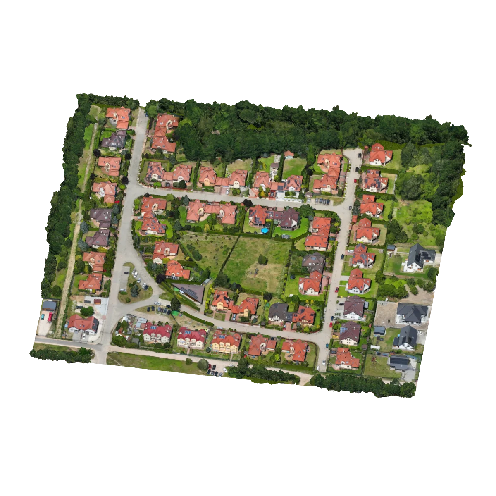
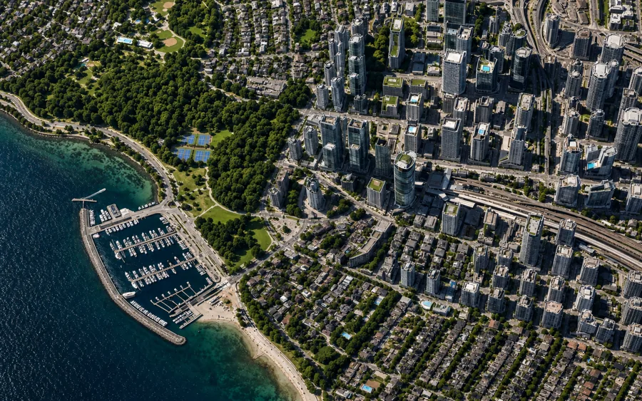
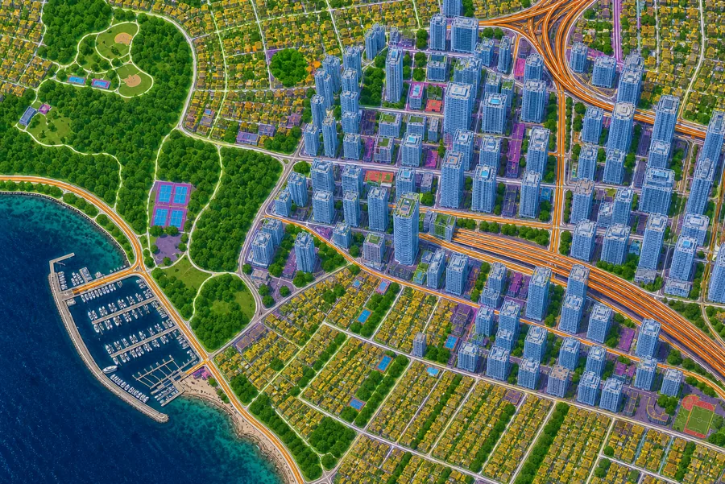

01
See your site. Ask questions about it.
Ask what's there, what's changed, and what's likely next.
Intelligence built to understand the natural world.
Intelligence built to understand the natural world.

Earth intelligence
Satellite imagery. Clear answers.
Ask what's there, what's changed, and what's likely next.
Millions of features understood. Thousands of unseen layers.
Makan weighs the options, recommends a move, and gets to work.

Tap a feature below. Drag the scene to explore.
Draw boundaries, name them, track them. Every place becomes a living dataset — continuously updated with every satellite pass.
Natural-language queries over satellite imagery. "Show me all new construction within 5 km of the pipeline in the last 90 days." The agent searches, cites sources, and returns geolocated results.
Construction, risk, wealth, density — satellite-detected, AI-modeled, and API-sourced.
New structures, terrain shifts, anomalies — timestamped, geolocated, scored with confidence.
Scrub through satellite passes, compare dates, catch anomalies the moment they deviate.


Run it through the dashboard. Plug it into your stack. Or deploy it inside your sovereign environment with a build tailored to your operation.
Use Makan in your browser to explore places, ask questions, and monitor changes. No code needed.
Open StudioFor monitoring teams running daily intelligence on their AOI. Map, alerts, agent, exports — one screen.
Bring Makan into your own app or AI agent through an API. Get answers and alerts inside the tools you already use.
Get a keyFor developers, agentic systems, and applications that need to query the world programmatically. Tool-callable from any LLM.
Run Makan in your own cloud or on your servers, with workflows and integrations built for your organization.
Talk to usFor governments, ministries, and strategic operators with sovereign data, custom pipelines, or bespoke integration requirements.

Tell us about your operation. We'll get back within two business days with a tailored walkthrough.
See what Makan can do for your team.
Infrastructure
Encroachment
Urban
Environmental
Pipeline
Flood & Disaster